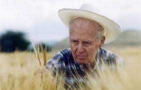
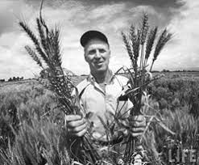
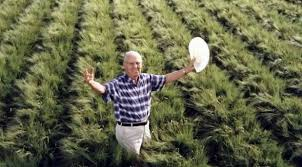
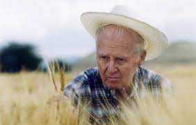
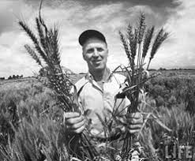
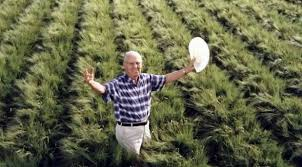

"Dr. Norman Borlaug"

El hombre que salvó mil millones de vidas
Historia
(Norman Ernest Borlaug; Cresco, 1914 - Dallas, 2009) Agrónomo norteamericano. Sus trabajos referentes a nuevas variedades de trigo y otros cereales, aplicados a la agricultura de determinados países subdesarrollados, tuvieron como resultado un considerable incremento de la producción agrícola de los mismos. Por medio de híbridos y cruces logró, por ejemplo, un incremento en las cosechas de trigo mexicano de hasta un 50%, haciendo que este país pasara de importador a exportador de este cereal. En 1970 le fue concedido el premio Nobel de la Paz.
Informacion adicionalImportante Norman Ernest Borlaug
- Norman Borlaug es reconocido mundialmente por haber salvado a millones de personas del hambre.
- Nacido en una familia campesina.
- Dedicado durante la mayor parte de su vida a la investigación científica en materias agrarias
- Norman Borlaug desarrolló programas similares por todo el mundo. Enviado por la FAO a la India, entre 1960 y 1965 logró multiplicar por diez las cosechas de trigo de este país mediante cruces de variedades orientales y occidentales.
- Borlaug defendió siempre la necesidad de priorizar agricultura y la ganadería sobre los demás sectores para acabar con el hambre.
 




